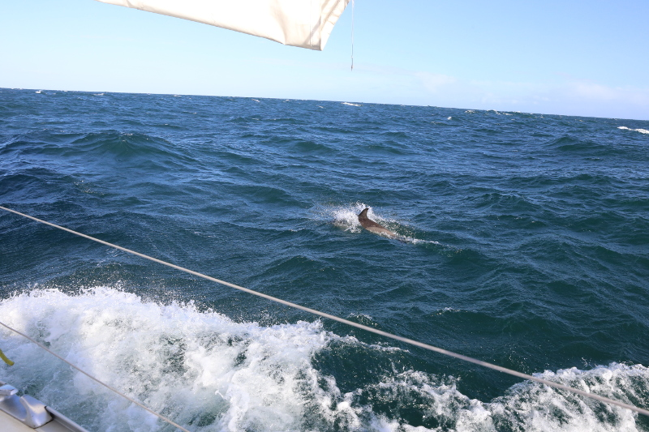

TANyAH 2014/2015
Pour tout renseignement, contacter |
Ce site sera tenu à jour, mais pourrait avoir quelques jours de retard pour le titre et/ou les résumés des exposés.
Programme :
- 17 Septembre 2014 :
Réunion de préparation
Il s'agit d'une séance de préparation, comme son nom le suggère finement ☺. Elle sera suivie d'un exposé. - 17 Septembre 2014 :
À propos de l'inégalité du grand crible,
Olivier Ramaré
Présentation et preuve d'une généralisation de l'inégalité du grand crible par des analogues « d'ordre supérieur » dus à Holt & Vaaler de la fonction de Beurling-Selberg. - 24 Septembre 2014 :
Sur une généralisation de la série de Hecke,
Martine Queffélec
- 1er Octobre 2014 :
Système de Riesz de dilatés d'une fonction,
Hervé Queffélec
Reporté ! - 8 Octobre 2014 :
Système de Riesz de dilatés d'une fonction, I,
Hervé Queffélec
- 15 Octobre 2014 :
Système de Riesz de dilatés d'une fonction, II,
Hervé Queffélec
- 22 Octobre 2014 :
Système de Riesz de dilatés d'une fonction, III,
Hervé Queffélec
Les notes du 22 Octobre 2014, version 1 - 29 Octobre 2014 :
Fonction sommatoire, formule de Perron et sommes courtes,
Olivier Ramaré
Nous détaillerons la formule de Perron sous sa forme suivante.Soit $F(s)=\sum_{n\ge1}a_n/n^s$ une série de Dirichlet et $\kappa>0$ un paramètre réel strictement supérieur à l'abscisse de convergence absolue de $F$. Nous avons, pour $x\ge1$, \begin{equation*} \sum_{n\le x}a_n = \frac{1}{2i\pi}\int_{\kappa-iT}^{\kappa+iT}F(z)\frac{x^z}{z}dz + \mathcal{O}\biggl( \int_{1/T}^\infty \sum_{n/|\log(x/n)|\le u}\frac{|a_n|}{n^\kappa}\frac{x^\kappa du}{Tu^2}\biggr). \end{equation*}
- 5 Novembre 2014 :
Sur les mauvaises répartitions,
Martine Queffélec
- 12 Novembre 2014 :
The least common Multiple of the first $n$ values of a polynomial sequence,
Javier Cilleruelo
It is well known that the Prime Number Theorem is equivalent to the asymptotic $\log \text{lcm} (1,...,n) \sim n$. We obtain an estimate for the quantity $\log \text{lcm} (f(1),...,f(n))$ when $f(x)$ is a quadratic polynomial. - 19 Novembre 2014 :
A chromatic version of Lagrange's four squares Theorem,
D. Surya Ramana
- 26 Novembre 2014 :
On Quotients and Products of Sets of Integers,
Javier Cilleruelo
- 3 Décembre 2014 :
Inclusive Prime Number Races,
Nathan Ng
Let $\pi(x;q,a)$ denote the number of primes up to $x$ that are congruent to $a (mod q)$. A "prime number race", for fixed modulus q and residue classes $a_1,\cdots,a_r$, investigates the system of inequalities $\pi(x;q,a_1)>\pi(x;q,a_2)>\cdots>\pi(x;q,a_r)$. We expect that this system should have arbitrarily large solutions $x$, and moreover we expect the same to be true no matter how we permute the residue classes $a_j$; if this is the case, the prime number race is called "inclusive". Rubinstein and Sarnak proved conditionally that every prime number race is inclusive; they assumed not only the generalized Riemann hypothesis but also a strong statement about the linear independence of the zeros of Dirichlet L-functions. We show that the same conclusion can be reached with a substantially weaker linear independence hypothesis. This is joint work with Greg Martin. - 10 Décembre 2014 :
Hardy's function of $L$-functions,
Ramdinmawia Vanlalngaia
- 17 Décembre 2014 :
Conversions élémentaires et conséquences en
théorie multiplicative explicite,
Olivier Ramaré
- 14 Janvier 2015 :
Une borne inférieure pour la norme $L^1$ du polynôme
trigonométrique sur la fonction de Moebius,
Olivier Ramaré
Exposé déplacé au 28 janvier. - 21 Janvier 2015 :
Sur le théorème de Hamburger,
Jean-François Burnol
- 28 Janvier 2015 :
Une borne inférieure pour la norme $L^1$ du polynôme
trigonométrique sur la fonction de Moebius,
Olivier Ramaré
Nous présenterons la preuve de 1999 de A. Balog & I. Ruzsa de la borne \begin{equation*} \int_0^1\Bigl|\sum_{n\le x}\mu(n)e(nt)\Bigr|dt\gg x^{1/8}/\log x. \end{equation*} La preuve est courte alors que c'est la première minoration par une puissance de $x$ de cette norme. La meilleure borne inférieure est encore due à ces deux auteurs et donne $\gg x^{1/6}$. Il n'y a eu aucune amélioration depuis 2001. - 4 Février 2015 :
Calcul de la norme L1 du polynôme de Morse,
Martine Queffélec
- 11 Février 2015 :
Le théorème de Hamburger,
Jean-François Burnol
- 26 Février 2015 :
Quelques propriétés arithmétiques des polylogarithmes p-adiques,
Marc Huttner
- 1er Avril 2015 :
Plus-minus zero-sum theorems,
Sukumar Das Adhikari
- 8 Avril 2015 :
Autour de la méthode de van der Corput pour les sommes d'exponentielles,
Olivier Robert
Mercredi 14h00, salle de réunion
- 15 Avril 2015 :
Sur la conjecture de Goldbach,
Jie Wu
Mercredi 14h00, salle de réunion
Je présenterai un historique assez complet sur la conjecture de Goldbach et en particulier mes travaux :- Sur la suite des nombres premiers jumeaux, Acta Arith. (1990), 65--94,
- Chen's double sieve, Goldbach's conjecture and the twin prime problem, Acta Arith. 114 (2004), 215--273,
- Chen's double sieve, Goldbach's conjecture and the twin prime problem, 2, Acta Arith. 131 (2008), 367--387.
- 27 Mai 2015 :
Une forme multiplicative de l'inégalité du grand crible
Olivier Ramaré
Nous montrons une version explicite d'une inégalité de Gallagher (1970), i.e. que pour tout $T\ge0$, nous avons \begin{equation*} \sum_{q\le Q}\frac{q}{\varphi(q)} \sum_{\substack{\chi\mod q,\\ \text{$\chi$ primitif}}}\int_{-T}^T \biggl|\sum_{n\le N}a_n\chi(n)n^{it}\biggr|^2dt \le 7 \sum_{n\le N}|a_n|^2(n+\max(T,3)Q^2) \end{equation*} où la somme porte sur les caractères de Dirichlet primitifs modulo $q$. - 3 Juin 2015 :
Quelques propriétés arithmétiques des
polylogarithmes p-adiques, II
Marc Huttner
10h
- 10 Juin 2015 :
Somme des chiffres des nombres premiers en base 2, I
Bruno Martin
salle de
visioconférence, deuxième étage, bâtiment M3
Je démontrerai l'estimation suivante due à Mauduit et Rivat (2010) : pour tout $\alpha$ réel non entier, il existe $\sigma(\alpha)>0$ tel que pour tout $x\ge 2$, $\sum_{p \le x} e^{2i \pi s_2(p) } \ll_{\alpha} x^{1- \sigma(\alpha)}$. Ici, $s_2(p)$ dénote la somme des chiffres du nombre premier $p$ modulo 2. - 17 Juin 2015 :
Somme des chiffres des nombres premiers en base 2, II
Bruno Martin
